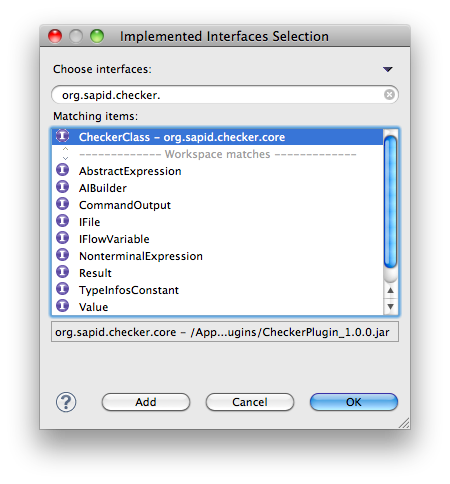

KariyaSiesta は 3種類のルール作成法を提供しています。
XPath > JavaScript > Java の順でルールの記述は難しくなりますが、 その分表現力は高くなります。 作成したいルールの複雑度に応じて、お選びください。 以下では、それぞれのルール記述方法について説明します。
Java を用いたルール記述方法について説明します。
Java を用いたルールは、以下のインタフェースを実装します。
org.sapid.checker.core.CheckerClass
まずは新規で Java プロジェクトを作成します。
次にプロジェクトのプロパティでビルドパスに sapid.jar と CheckerPlugin_x.x.x.jar を追加します。 sapid.jar は <Sapid のインストールディレクトリ>/lib/class/ 配下にあります。 CheckerPlugin_x.x.x.jar は KariyaSiesta をインストールした Eclipse の plugins ディレクトリ配下にあります。
次にルールの実体となるクラスを作成します。 org.sapid.checker.core.CheckerClass を実装してください。
そして、check メソッドの内容を書いていきます。 main メソッドは、テスト用のエントリポイントで、 必須ではありません。
SampleRule.java:
package sample.rule;
import java.io.IOException;
import java.util.ArrayList;
import java.util.List;
import org.sapid.checker.core.CheckerClass;
import org.sapid.checker.core.IFile;
import org.sapid.checker.core.IFileFactory;
import org.sapid.checker.core.Result;
import org.sapid.checker.cx.wrapper.CFileElement;
import org.sapid.checker.cx.wrapper.CStatementElement;
import org.sapid.checker.rule.CheckRule;
import org.sapid.checker.rule.NodeOffsetUtil;
import org.sapid.parser.common.ParseException;
public class SampleRule implements CheckerClass {
/** ルールのレベル */
private final static int LEVEL = 3;
/** ルールのメッセージ */
private final static String MESSAGE = "Sample Rule";
@Override
public List<Result> check(IFile file, CheckRule rule) {
CFileElement cfile = new CFileElement(file.getDOM());
List<Result> results = new ArrayList<Result>();
// すべての while 文を集める
CStatementElement[] stmts = cfile.getStatments();
for (CStatementElement stmt : stmts) {
if (!("While".equals(stmt.getSort()))) {
continue;
}
// While 文の下にある break 文を集める
CStatementElement[] subStmts = stmt.getStatments();
for (CStatementElement subStmt : subStmts) {
if (!subStmt.isBreakStatement()) {
continue;
}
results.add(new Result(null, new NodeOffsetUtil(subStmt
.getElem()).getRange(), LEVEL, MESSAGE));
}
}
return results;
}
/**
* @param args
* @throws ParseException
* @throws IOException
*/
public static void main(String[] args) throws ParseException, IOException {
if (args.length != 1) {
return;
}
List<Result> results = new SampleRule().check(
IFileFactory.create(args[0]), null);
for (Result result : results) {
System.out.println(result.getLine() + ": " + result.getMessage());
}
}
}
この例では、 チュートリアル で XPath を用いて記述した 「while ブロック内部で break を使ってはいけない」というルールを Java で実装しなおしたものです。 args[0] には、SDB 構築済みの C ファイルを渡してください。
JavaScript を用いたルール記述方法は現在実装中です。 CSS セレクタ等によるルール記述が可能になる予定です。 KariyaSiesta の進化にご期待ください。